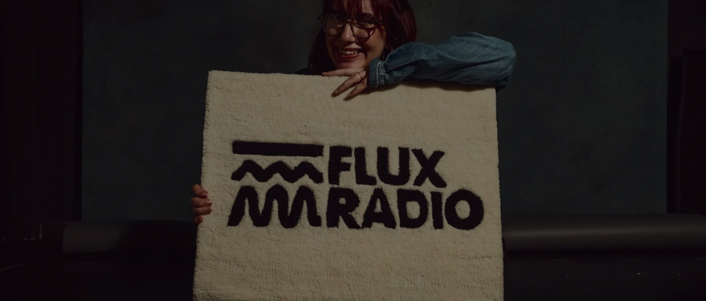

Flux radio, radi, radiće: Spoj budućnosti i prošlosti kroz imerzivno iskustvo muzičkog putovanja
9. Novembar 2024 8h - POSTED BY FLUX RADIO
FLUX radio predstavlja studentski projekat pokrenut na Fakultetu
dramskih umetnosti u Beogradu, na Katedri za menadžment i
produkciju pozorišta, radija i kulture.
Na koji način je prošlost na našim prostorima uticala na
sadašnjost koju danas živimo? Koliko smo zapravo zadovoljni
stvarnošću koju smo kreirali u odnosu na Iščekivanja o istoj? Kako
svojim akcijama utičemo na budućnost?
I naposletku - da li je nešto moglo da bude drugačije?
Direktno iz etra studentske radio stanice FLUX, ovo su pitanja
koja prožimaju kako sam radio program, tako i danas, gotovo
svačiju svakodnevnicu. FLUX radio predstavlja studentski projekat
pokrenut na Fakultetu dramskih umetnosti u Beogradu, na Katedri za
menadžment i produkciju pozorišta, radija i kulture. Kao
petodnevna digitalna radio-stanica, FLUX pruža mladima slobodan
medijski prostor za kreativno izražavanje i otvara dijalog o
temama koje su važne čitavoj društvenoj zajednici, ali su vrlo
često zanemarivane.

Ove godine, FLUX radio sa sloganom FLUX RADIO, RADI, RADIĆE!
emituje se 18-22. novembra na www.fluxradio.rs sa svojom
programskom šemom od 09:00h do 00:00h. Svečano otvaranje u pratnji
žurke za početak programa FLUX radija održava se 16. novembra u
20:00h na
Fakultetu dramskih umetnosti, a
predstavlja savršen spoj budućnosti i prošlosti kroz imerzivno
iskustvo muzičkog, vremenskog i svetlosnog putovanja, uključujući
dve DJ scene - disko i tehno, koje spaja jedan vremenski tunel.
Kao i samo otvaranje, program FLUX radija prilagođen je slušaocima
nezavisno od starosne dobi, budući da sadrži različite programske
segmente koji pokrivaju širok spektar tema. Detalje o programu
možete videti u programskoj šemi, ali ono što FLUX radio čini
dodatno primamljivim i malđoj i starijoj populaciji jeste upravo
tema kojom su studenti vođeni u koncipiranju FLUX radija, a to je
retrofuturizam.
Retrofuturizam predstavlja pojam i pravac koji spaja vizije o
budućnosti ljudi iz prošlosti. Samim tim, retrofuturizam vezuje se
za uticaj prošlosti na kreiranje budućnosti, što je tema koju
ovogodišnje izdanje FLUX radija aktuelizuje u skladu sa današnjim
vremenom, postavljajući još jedno direktno pitanje društvu:
Ko je više uticao na stvaranje budućnosti - oni pre ili tokom nje?
Stoga, iako su tendencije iščekivanja budućnosti oduvek bile
neosporivi deo ljudske prirode, FLUX ne želi da se ta navika
latentno prenese i u našu budućnost. I naposletku, FLUX ne želi da
dočeka pitanje svojih naslednika - da li je nešto moglo da bude
drugačije, jer se postarao da ovoj sadašnjosti maksimalno
doprinese kako bi budućnost, zapravo, bila drugačija.
Stoga, studenti ispred radija FLUX vas pozivaju pozivaju da im se
priključite u stvaranju zajedničke budućnosti, na otvaranju 16.
novembra na Fakultetu dramskih umetnosti, a nakon toga i ostanu u
pratnji programa jer FLUX je
RADIO, RADI i RADIĆE!
IZVOR:
Kurir.rs